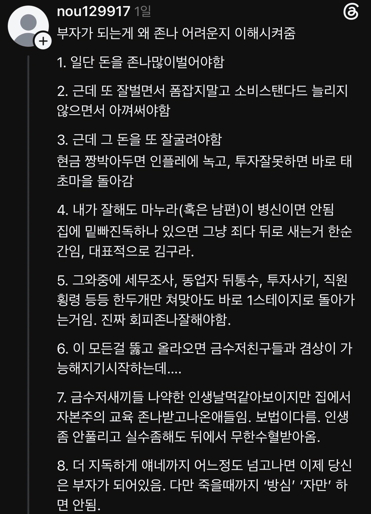

9. 자식도 조심해야함
무한운빨나락이지선다...!

9. 자식도 조심해야함
무한운빨나락이지선다...!
그때 무슨 악재란 악재가 다 겹쳐서 직원 횡령을 대출 갚기직전에 터지고 할머니 돌아가시고 회사 터지니까 세무조사에 돈갚으라 난리통에 재산 싸그리 다 날라가고 월세 단칸방 스타트하고 십년 좀 넘었는데 가족 흩어져서 아직 월세중.. 동생은 결혼해서 탈출한게 다행인지
우리집도 아버지가 본인 명의로 건물 사서 공장 돌렸는데 주 거래처 2군데가 한곳은 부도맞고 한곳은 거래하던곳 돈 싹 들고 날랐음 씨발년ㅋㅋㅋㅋㅋㅋㅋㅋㅋㅋㅋㅋㅋㅋ
씨발! ㅜㅜ 나름 우리집도 아빠가 꽤 빠르게 사업시장해서 지역에서 먹히던 사업이었는데 집3채랑 공장까지 한방에 날아가서.. 집은 나중에 나랑 동생 준다고 좋은지역에다 사둔거였는데
화이팅.........
중임 맡은 직원 중 작정하고 통수치면 진짜 다시 리턴하게 되더라
대기업 공채 출신인데 ㅇㅈ한다
이직한지 좀 됐는데 그새끼들이 투자한다한거 샀으면..
2/3이 금수저였음
엄빠집 매매한다 했을때 별 생각 없었는데 아...
gta6에 나오는 '진짜' 부자들 보니까 한국에서 꺼드럭대는거 쪼끔 우스워짐
GTA6인데 '진짜'부자야??
진짜 부자일수록 다른 사람의 시간을 돈주고 살 수 있는 사람이지
이게 한글이 맞나?
그리고 조빠지게 공부해서 대기업 가서 성과급 많이 받으면 박탈감든다, 성과급 많이 줘서 부동산 값 오른다 양극화 심해진다 빨갱이들 겐세이도 이겨내야함..
근데 저렇게 착실하게 해서 돈 잘 모았는데 결혼 잘못하면 재산 반 날라감 결혼 마저도 잘해야 함 부자 되는거 개씹미친 존나 어려움
그래서 부자가 적지
부자는 항시 조심해야함
애매한 금수저들은 돈에 집착이 과하더라
맨날 돈 어떻게 벌지 얘기밖에 안함
엥?ㅋㅋㅋㅋㅋㅋㅋㅋ
1. 연 5억 저축하면서
2. 3인가족 월 300 생활비 쓰고
3. 채권 배당주 부동산 적절히 분산하고 자산40억 부채3억 순자산37억으로 안정적 운용중 물가상승률보다 2~3%높은 연수익률만 추구함
4. 배우자도 검소한 사람 만나서 유딩 키우면서 잘 사는중 배우자도 직장다님 공무원
5. 세무조사받을일 없음, 동업안함, 개인에게 투자안함, 직원은 이체권한없음
이렇게 5번까지는 잘 왔다
금수저친구가 없어서 6번이후로 넘어갈일은 없을듯
실례지만 피자좀
또또 피자도 없이 자랑한다
내 자산이 인플레를 따라가지 못 할까 신경쓰기 시작하는 시점부터 부자임
성공하고나서 리스크 돤리까지 가야되서 개빡심 ㅋㅋ
근데 운이중요함...
참고로 흙수저도 마찬가지다.
ㅄ부모, ㅄ친구, 없는대로 아껴야하고, 벌면 버는대로 아껴야 함.
이런 사람은 그냥 본문의 태초마을 가는게 꿈임.
5번은 너무 빡세네.......